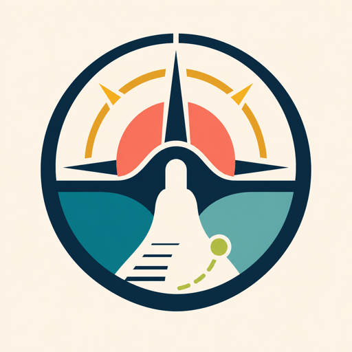

Name the friction without blame.
The coach treats stuckness as an access problem, not a character problem.

Unstuck CoachUnstuck Coach gives you one humane next move for task initiation, reply debt, re-entry, admin loops, and working-memory overload.
The coach treats stuckness as an access problem, not a character problem.
One visible action, small enough to do without decoding a plan.
The pile stays parked while the next minute becomes possible.
Use it when you are frozen at a bill, a message, a calendar check, a work task, a shutdown, or the awkward return after avoiding something.
Unstuck Coach is not therapy, diagnosis, or medical treatment. It is executive-function accessibility support for the next useful move.
Coarse events like chat opened, first prompt submitted, reply received, and errors.
No prompt histories, request bodies, API keys, or provider payloads in analytics.
The product helps with access and activation. It does not replace qualified care.